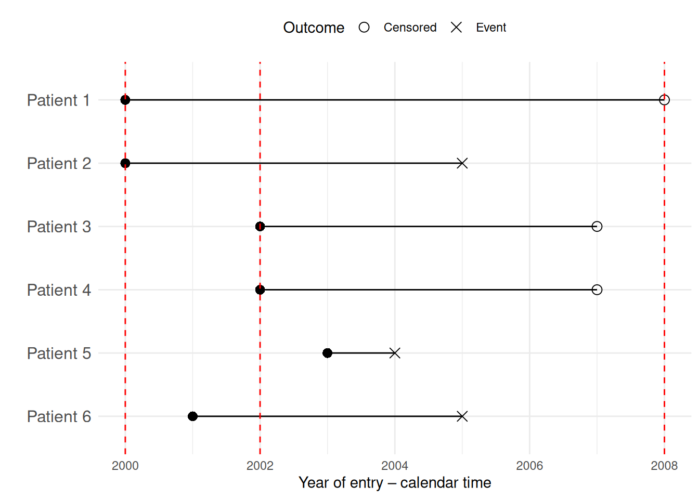

library(ggplot2)
# Load necessary libraries
# Create a dataset similar to the image
data <- data.frame(
Patient = factor(c("Patient 1", "Patient 2", "Patient 3", "Patient 4", "Patient 5", "Patient 6"),
levels = rev(c("Patient 1", "Patient 2", "Patient 3", "Patient 4", "Patient 5", "Patient 6"))
),
Entry = c(2000, 2000, 2002, 2002, 2003, 2001), # Year of entry
Exit = c(2008, 2005, 2007, 2007, 2004, 2005), # Year of follow-up end
Event = c(0, 1, 0, 0, 1, 1) # 1 = Event occurred, 0 = Censored
)
# Define the accrual and follow-up periods
accrual_start <- 2000
accrual_end <- 2002
followup_end <- 2008
# Create the plot
ggplot(data, aes(y = Patient)) +
# Add follow-up lines
geom_segment(aes(x = Entry, xend = Exit, y = Patient, yend = Patient), color = "black") +
# Add entry points
geom_point(aes(x = Entry, y = Patient), shape = 16, size = 3) +
# Add censoring (open circles) and event markers (crosses)
geom_point(aes(x = Exit, y = Patient, shape = as.factor(Event)), size = 3) +
scale_shape_manual(values = c(1, 4), labels = c("Censored", "Event")) + # 1 = Open circle, 4 = Cross
# Add vertical lines for accrual and follow-up periods
geom_vline(xintercept = c(accrual_start, accrual_end, followup_end), linetype = "dashed", color = "red") +
# Labels and themes
labs(x = "Year of entry – calendar time", y = "", shape = "Outcome") +
theme_minimal() +
theme(axis.text.y = element_text(size = 12), legend.position = "top")

| 变量名 | 解释 |
|---|---|
| death | 是否在1992.12前死亡(1:是,0:否) |
| time | 存活时间,NA:Administrative censoring |
| qsmk | 处理变量,是否停止吸烟(1:是,0:否) |
| age | 年龄 |
| smokeyrs | 烟龄 |